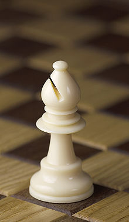
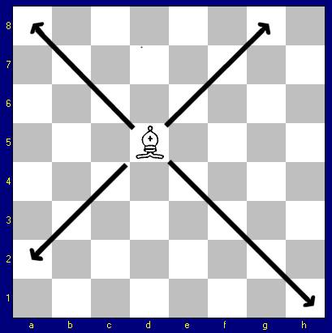

Nel gioco degli scacchi l'alfiere è uno dei pezzi a disposizione dei giocatori. Assieme al cavallo è uno dei cosiddetti "pezzi leggeri" in contrapposizione a donna e torre chiamati "pezzi pesanti". L'alfiere viene spesso rappresentato con il copricapo da vescovo dato che nei paesi anglofoni è chiamato appunto Bishop (vescovo); il nome è invece di origine arabo-persiana. Il nome "Alfiere" deriva infatti da "al-fil" che significa "l'elefante" in quanto nei paesi del Medio Oriente questo pezzo raffigurava tale animale.

